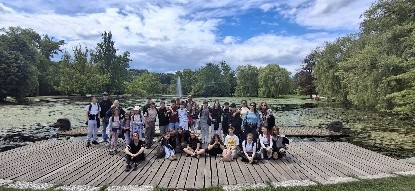
Group Mobility
Praga 2026
Si torna a Praga, questa volta con gli studenti: laboratori a scuola, il Ponte Carlo, parchi e orti urbani, e famiglie ospitanti che restano nel cuore.
38 foto · 1 video · 9 storie
Siamo stati a Praga anche in un'altra occasione: Praga 2025 (7–10 dicembre 2025)
Galleria
Tocca una foto per ingrandirla
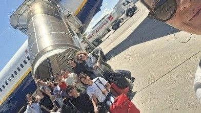
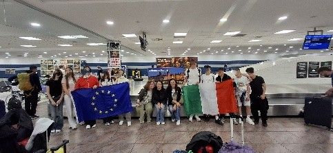

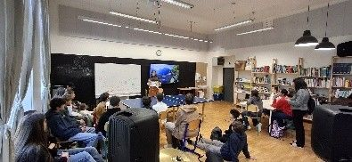

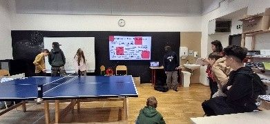
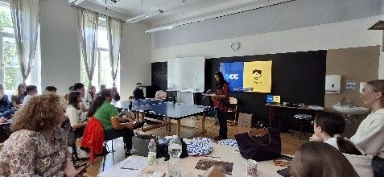
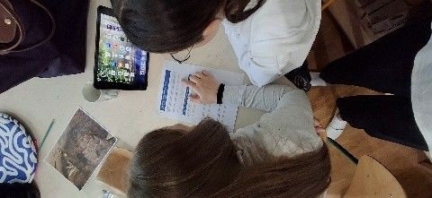
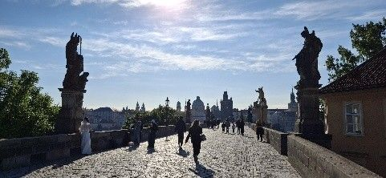
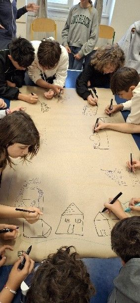
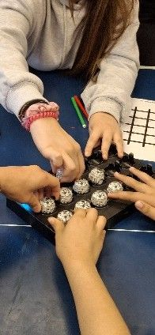
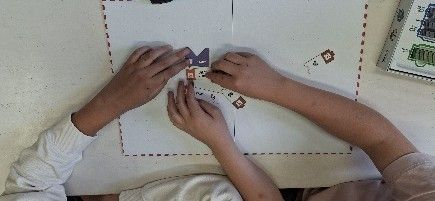
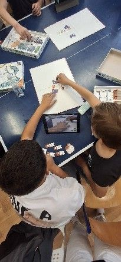
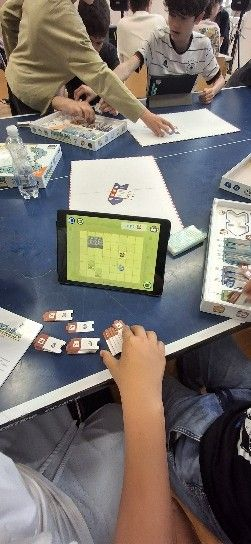

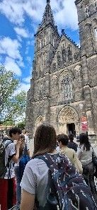
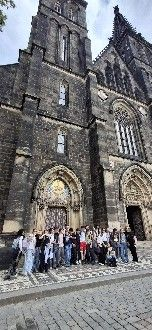
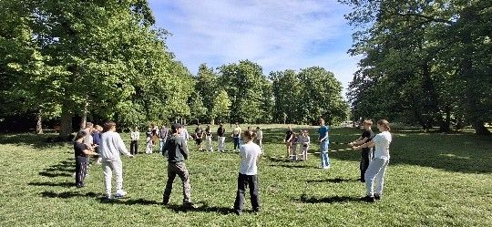

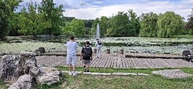
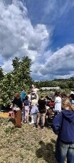
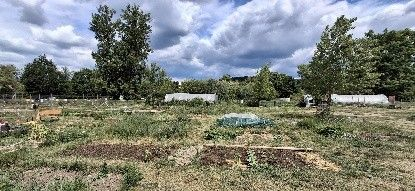
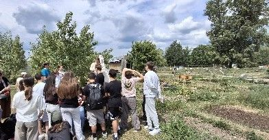
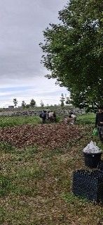
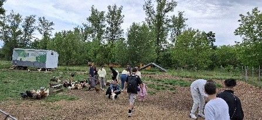
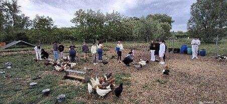
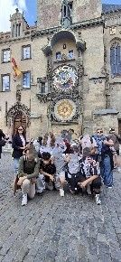
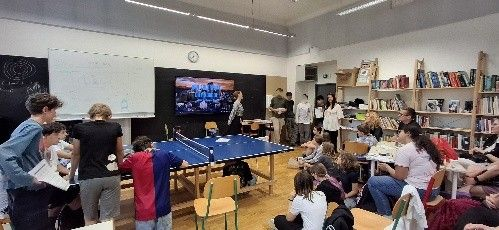
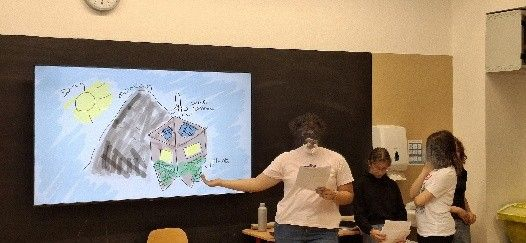
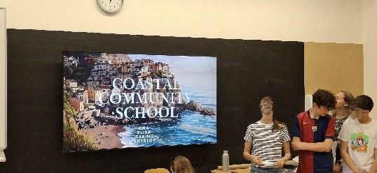
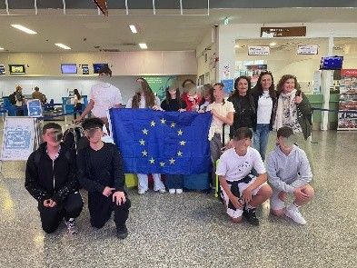

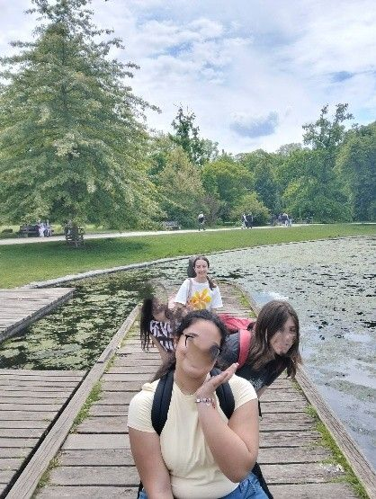
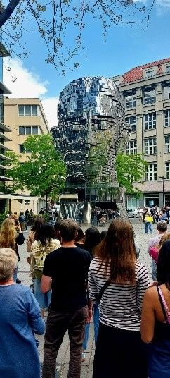
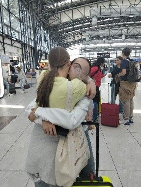
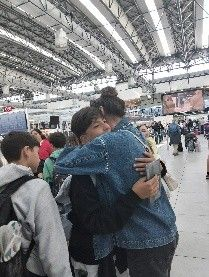
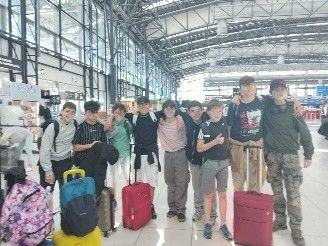


Scopri l'esperienza
Le loro storie
-
The Erasmus experience was unforgettable. It’s a journey where you grow, learn so many new things, and have unique experiences. It offers you the opportunity to improve your English, immerse yourself in a different culture and make new friends, even from outside Italy.
Maria Vittoria -
I really enjoyed the Erasmus experience. It helped me to improve my English (by talking and listening), to make new friends, even if they’re really far away, to discover new cultures, and visit new cities. For example, even though my Erasmus was last year, the girl who hosted me and I still talk to each other. Like I said, I loved this experience and I hope to do it again.
Elisa -

For me, the Erasmus experience was wonderful and meaningful, both for improving my language skills and for making new friends.
Simone -
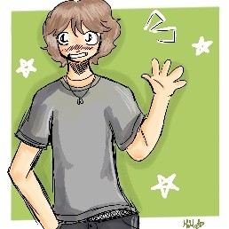
Erasmus is an experience where I visited new places, discovered new things and where I improved my English skills. I met a lot of people but I didn’t make friends: I became a part of a big family.
Sofia -

It was an incredible experience. I had the opportunity to travel in a new city that I enjoyed a lot, and I will always carry in my heart the fantastic family that hosted me. We’re still in touch and text each other often. I will remember this trip for the rest of my life.
Giorgio O. -

For me, the Erasmus experience was an opportunity to improve my English while making new friends, and it also gave me the chance to discover new places where I was warmly received.
Aurora -
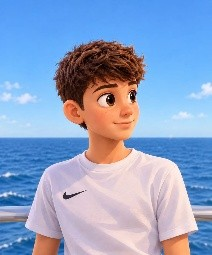
Erasmus left me new friends and more confidence, now I know I can do it alone, in a new place.
Sabino -
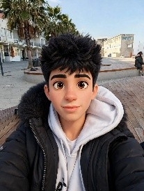
For me the Erasmus experience was something completely new and wonderful. We made new friends and learned many new things. We visited a new country, observed different traditions and learned new lifestyles. Overall truly unforgettable.
Studente Erasmus+ -
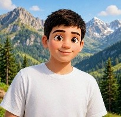
For me Erasmus was an unforgettable experience that taught me that home is not a place, but the people.
Studente Erasmus+